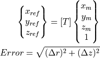
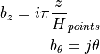
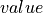

Cone / Cylinder DataBase (desicos.conecylDB)¶
The desicos.conecylDB module includes all the information about cones
and cylinders required to reproduce structures that were investigated
by many publications and in the context of DESICOS.
It also includes the tools necessary to work with the Imperfection DataBase. Unfortunately, the files composing this database cannot be made available with the repository, but all the tools required to post process an imperfection file had been made available.
Conecyl Data-Base (desicos.conecylDB.conecylDB)¶
-
desicos.conecylDB.conecylDB.delete(which, name)[source]¶ Delete an entry to the dynamic database.
- Parameters
- whichstr
A string that can be:
ccs,laminaprops,allowables.- namestr
The name of the new entry.
-
desicos.conecylDB.conecylDB.fetch(which, local_only=False)[source]¶ Fetches a dictionary from the database
- Parameters
- whichstr
A string that can be:
ccs,laminaprops,allowables.- local_onlybool, optional
If only the local data-base should be considered.
-
desicos.conecylDB.conecylDB.save(which, name, value)[source]¶ Save an entry to the dynamic database.
- Parameters
- whichstr
A string that can be:
ccs,laminaprops,allowables.- namestr
The name of the new entry.
- valueobject
The object that will be stored in the dictionary pointed by
whichunder the key given byname.
-
desicos.conecylDB.conecylDB.update_imps()[source]¶ Returns the updated imperfection definitions from the data-base
- Returns
- outtuple
A tuple containing the updated dictionaries with useful data form the data-base. In the description below
keycorresponds to accsentry of the database:imps: contains the full path of an imperfection file corresponding tokey, accessed doingimp[key]['msi']orimp[key]['ti']imps_theta_z: similar toimpst_measured: contains the measured shell thickness for a correponding entry access doingt_measured[key]R_best_fitH_measured
Cone/Cylinders (desicos.conecylDB.ccs)¶
This static database stores all entries in the dictionary ccs which can be
imported as:
from desicos.conecylDB.ccs import ccs
More entries can be added here if one wishes to update the static database.
The entries shown in the Plug-In for Abaqus are those with the corresponding
keys listed in include_in_GUI.
Lamina Elastic Properties (desicos.conecylDB.laminaprops)¶
This static database stores all entries in the dictionary laminaprops
which can be imported as:
from desicos.conecylDB.laminaprops import laminaprops
In the dictionary laminaprops each entry is stored as a tuple:
orthotropic material: (, , ,
 ,
, )
,
, )isotropic material: (
 , ,
, ,  )
)
More entries can be added here if one wishes to update the static database.
Lamina Allowables (desicos.conecylDB.allowables)¶
This static database stores all entries in the dictionary allowables
which can be imported as:
from desicos.conecylDB.allowables import allowables
In the dictionary allowables each entry is stored as a tuple:
(, , , , , )
where  and
and  stand for compression or tensile allowables. More
entries can be added here if one wishes to update the static database.
stand for compression or tensile allowables. More
entries can be added here if one wishes to update the static database.
Fitting Data (desicos.conecylDB.fit_data)¶
This module includes functions used to fit measured imperfection data.
-
desicos.conecylDB.fit_data.best_fit_cone(path, H, alphadeg, R_expected=10.0, save=True, errorRtol=1e-09, maxNumIter=1000, sample_size=None)[source]¶ Fit a best cone for a given set of measured data
Note
NOT IMPLEMENTED YET
-
desicos.conecylDB.fit_data.best_fit_cylinder(path, H, R_expected=10.0, save=True, errorRtol=1e-09, maxNumIter=1000, sample_size=None)[source]¶ Fit a best cylinder for a given set of measured data
The coordinate transformation which must be performed in order to adjust the raw data to the finite element coordinate system is illustrated below:

This transformation can be represented in matrix form as:
Note that five variables are unknowns:
the rotation angles and

the three components of the translation , and
The five unknowns are calculated iteratively in a non-linear least-sqares problem (solved with
scipy.optimize.leastsq), where the measured data is transformed to the reference coordinate system and there compared with a reference cylinder in order to compute the residual error using:
where:
, and are the data coordinates in the data coordinate system
are the data coordinates in the reference coordinate system
and are defined as:
Since the measured data may have an unknown radius
 , the solution of
these equations has to be performed iteratively with one additional
external loop in order to update .
, the solution of
these equations has to be performed iteratively with one additional
external loop in order to update .- Parameters
- pathstr or np.ndarray
The path of the file containing the data. Can be a full path using
r"C:\Temp\inputfile.txt", for example. The input file must have 3 columns “

 ” expressed
in Cartesian coordinates.
” expressed
in Cartesian coordinates.This input can also be a
np.ndarrayobject, with, ,
in each corresponding column.- Hfloat
The nominal height of the cylinder.
- R_expectedfloat, optional
The nominal radius of the cylinder, used as a first guess to find the best-fit radius (
R_best_fit). Note that if not specified more iterations may be required.- savebool, optional
Whether to save an
"output_best_fit.txt"in the working directory.- errorRtolfloat, optional
The error tolerance for the best-fit radius to stop the iterations.
- maxNumIterint, optional
The maximum number of iterations for the best-fit radius.
- sample_sizeint, optional
If the input file containing the measured data is too big it may be convenient to use only a sample of it in order to calculate the best fit.
- Returns
- outdict
A Python dictionary with the entries:
out['R_best_fit']floatThe best-fit radius of the input sample.
out['T']np.ndarrayThe transformation matrix as a
 2-D array. This matrix
does the transformation: input_pts –> output_pts.
2-D array. This matrix
does the transformation: input_pts –> output_pts.out['Tinv']np.ndarrayThe inverse transformation matrix as a
2-D array.
This matrix does the transformation: output_pts –> input_pts.out['input_pts']np.ndarrayThe input points in a 2-D array.
out['output_pts']np.ndarrayThe transformed points in a 2-D array.
Examples
General usage
For a given cylinder with expected radius and height of
R_expectedandH:from desicos.conecylDB.fit_data import best_fit_cylinder out = best_fit_cylinder(path, H=H, R_expected=R_expected) R_best_fit = out['R_best_fit'] T = out['T'] Tinv = out['Tinv']
Using the transformation matrices
TandTinv
For a given input data with
 positions in each line:
positions in each line:x, y, z = np.loadtxt('input_file.txt', unpack=True)
the transformation could be obtained with:
xnew, ynew, znew = T.dot(np.vstack((x, y, z, np.ones_like(x))))
and the inverse transformation:
x, y, z = Tinv.dot(np.vstack((xnew, ynew, znew, np.ones_like(xnew))))
-
desicos.conecylDB.fit_data.calc_c0(path, m0=50, n0=50, funcnum=2, fem_meridian_bot2top=True, rotatedeg=None, filter_m0=None, filter_n0=None, sample_size=None, maxmem=8)[source]¶ Find the coefficients that best fit the imperfection
The measured data will be fit using one of the following functions, selected using the
funcnumparameter:Half-Sine Function
Half-Cosine Function (default)
Complete Fourier Series

where:

where represents the difference between the maximum and the minimum
values in the imperfection file.The approximation can be written in matrix form as:
![w_0 = [g] \{c_0\}](../../_images/math/1647bc665f0ae987f9a4c5098fe55254b39dccd9.png)
where carries the base functions and the respective amplitudes. The solution consists on finding the best that minimizes the least-square error between the measured imperfection pattern and the function.
- Parameters
- pathstr or np.ndarray
The path of the file containing the data. Can be a full path using
r"C:\Temp\inputfile.txt", for example. The input file must have 3 columns “ ” expressed
in Cartesian coordinates.
” expressed
in Cartesian coordinates.This input can also be a
np.ndarrayobject, with, , in each corresponding column.- m0int
Number of terms along the meridian (
).- n0int
Number of terms along the circumference (
).- funcnumint, optional
As explained above, selects the base functions used for the approximation.
- fem_meridian_bot2topbool, optional
A boolean indicating if the finite element has the
axis starting
at the bottom or at the top.- rotatedegfloat or None, optional
Rotation angle in degrees telling how much the imperfection pattern should be rotated about the (or
 ) axis.
) axis.- filter_m0list, optional
The values of
m0that should be filtered (seefilter_c0()).- filter_n0list, optional
The values of
n0that should be filtered (seefilter_c0()).- sample_sizeint or None, optional
An in specifying how many points of the imperfection file should be used. If
Noneis used all points file will be used in the computations.- maxmemint, optional
Maximum RAM memory in GB allowed to compute the base functions. The
scipy.interpolate.lstsqwill go beyond this limit.
- Returns
- outnp.ndarray
A 1-D array with the best-fit coefficients.
Notes
If a similar imperfection pattern is expected along the meridian and along the circumference, the analyst can use an optimized relation between
m0andn0in order to achieve a higher accuracy for a given computational cost, as proposed by Castro et al. (2014):
-
desicos.conecylDB.fit_data.fa(m0, n0, zs_norm, thetas, funcnum=2)[source]¶ Calculates the matrix with the base functions for
The calculated matrix is directly used to calculate the displacement field, when the corresponding coefficients
 are known, through:
are known, through:a = fa(m0, n0, zs_norm, thetas, funcnum) w0 = a.dot(c0)
- Parameters
- m0int
The number of terms along the meridian.
- n0int
The number of terms along the circumference.
- zs_normnp.ndarray
The normalized
coordinates (from 0. to 1.) used to compute
the base functions.- thetasnp.ndarray
The angles in radians representing the circumferential positions.
- funcnumint, optional
The function used for the approximation (see function
calc_c0())
-
desicos.conecylDB.fit_data.filter_c0(m0, n0, c0, filter_m0, filter_n0, funcnum=2)[source]¶ Apply filter to the imperfection coefficients
A filter consists on removing some frequencies that are known to be related to rigid body modes or spurious measurement noise. The frequencies to be removed should be passed through inputs
filter_m0andfilter_n0.- Parameters
- m0int
The number of terms along the meridian.
- n0int
The number of terms along the circumference.
- c0np.ndarray
The coefficients of the imperfection pattern.
- filter_m0list
The values of
m0that should be filtered.- filter_n0list
The values of
n0that should be filtered.- funcnumint, optional
The function used for the approximation (see function
calc_c0())
- Returns
- c0_filterednp.ndarray
The filtered coefficients of the imperfection pattern.
-
desicos.conecylDB.fit_data.fw0(m0, n0, c0, xs_norm, ts, funcnum=2)[source]¶ Calculates the imperfection field for a given input
- Parameters
- m0int
The number of terms along the meridian.
- n0int
The number of terms along the circumference.
- c0np.ndarray
The coefficients of the imperfection pattern.
- xs_normnp.ndarray
The meridian coordinate (
) normalized to be between 0.and1..- tsnp.ndarray
The angles in radians representing the circumferential coordinate (
).- funcnumint, optional
The function used for the approximation (see function
calc_c0())
- Returns
- w0snp.ndarray
An array with the same shape of
xs_normcontaining the calculated imperfections.
Notes
The inputs
xs_normandtsmust be of the same size.The inputs must satisfy
c0.shape[0] == size*m0*n0, where:size=2iffuncnum==1 or funcnum==2size=4iffuncnum==3
-
desicos.conecylDB.fit_data.transf_matrix(alphadeg, betadeg, gammadeg, x0, y0, z0)[source]¶ Calculates the transformation matrix
The transformation matrix is used to transform a set of points from one coordinate system to another.
Many routines in the
desicosrequire a transformation matrix when the coordinate system is different than the default one. In such cases the angles and
the translations represent how
the user’s coordinate system differs from the default.
and
the translations represent how
the user’s coordinate system differs from the default.- Parameters
- alphadegfloat
Rotation around the x axis, in degrees.
- betadegfloat
Rotation around the y axis, in degrees.
- gammadegfloat
Rotation around the z axis, in degrees.
- x0float
Translation along the x axis.
- y0float
Translation along the y axis.
- z0float
Translation along the z axis.
- Returns
- Tnp.ndarray
The 3 by 4 transformation matrix.
Interpolate (desicos.conecylDB.interpolate)¶
This module includes some interpolation utilities that will be used in other modules.
-
desicos.conecylDB.interpolate.interp(x, xp, fp, left=None, right=None, period=None)[source]¶ One-dimensional linear interpolation
Returns the one-dimensional piecewise linear interpolant to a function with given values at discrete data-points.
- Parameters
- xarray_like
The x-coordinates of the interpolated values.
- xp1-D sequence of floats
The x-coordinates of the data points, must be increasing if argument
periodis not specified. Otherwise,xpis internally sorted after normalizing the periodic boundaries withxp = xp % period.- fp1-D sequence of floats
The y-coordinates of the data points, same length as
xp.- leftfloat, optional
Value to return for
x < xp[0], default isfp[0].- rightfloat, optional
Value to return for
x > xp[-1], default isfp[-1].- periodfloat, optional
A period for the x-coordinates. This parameter allows the proper interpolation of angular x-coordinates. Parameters
leftandrightare ignored ifperiodis specified.
- Returns
- y{float, ndarray}
The interpolated values, same shape as
x.
- Raises
- ValueError
If
xpandfphave different length Ifxporfpare not 1-D sequences Ifperiod==0
Notes
Does not check that the x-coordinate sequence
xpis increasing. Ifxpis not increasing, the results are nonsense. A simple check for increasing is:np.all(np.diff(xp) > 0)
Examples
>>> xp = [1, 2, 3] >>> fp = [3, 2, 0] >>> interp(2.5, xp, fp) 1.0 >>> interp([0, 1, 1.5, 2.72, 3.14], xp, fp) array([ 3. , 3. , 2.5 , 0.56, 0. ]) >>> UNDEF = -99.0 >>> interp(3.14, xp, fp, right=UNDEF) -99.0
Plot an interpolant to the sine function:
>>> x = np.linspace(0, 2*np.pi, 10) >>> y = np.sin(x) >>> xvals = np.linspace(0, 2*np.pi, 50) >>> yinterp = interp(xvals, x, y) >>> import matplotlib.pyplot as plt >>> plt.plot(x, y, 'o') [<matplotlib.lines.Line2D object at 0x...>] >>> plt.plot(xvals, yinterp, '-x') [<matplotlib.lines.Line2D object at 0x...>] >>> plt.show()
Interpolation with periodic x-coordinates:
>>> x = [-180, -170, -185, 185, -10, -5, 0, 365] >>> xp = [190, -190, 350, -350] >>> fp = [5, 10, 3, 4] >>> interp(x, xp, fp, period=360) array([7.5, 5., 8.75, 6.25, 3., 3.25, 3.5, 3.75])
-
desicos.conecylDB.interpolate.interp_theta_z_imp(data, mesh, alphadeg, H_measured, H_model, R_bottom, stretch_H=False, z_offset_bot=None, rotatedeg=0.0, num_sub=10, ncp=5, power_parameter=2, ignore_bot_h=None, ignore_top_h=None, T=None)[source]¶ Interpolates a data set in the format
This function uses the inverse-weighted algorithm (
inv_weighted()).- Parameters
- datastr or numpy.ndarray, shape (N, 3)
The data or an array containing the imperfection file in the format.
- meshnumpy.ndarray, shape (M, 3)
The mesh coordinates where the values will be interpolated to.
- alphadegfloat
The cone semi-vertex angle in degrees.
- H_measuredfloat
The total height of the measured test specimen, including eventual resin rings at the edges.
- H_modelfloat
The total height of the new model, including eventual resin rings at the edges.
- R_bottomfloat
The radius of the model taken at the bottom edge.
- stretch_Hbool, optional
Tells if the height of the measured points, which is usually smaller than the height of the test specimen, should be stretched to fill the whole test specimen. If not, the points will be placed in the middle or using the offset given by
z_offset_botand the area not covered by the measured points will be interpolated using the closest available points (the imperfection pattern will look like there was an extrusion close to the edges).- z_offset_botfloat, optional
The offset that should be used from the bottom of the measured points to the bottom of the test specimen.
- rotatedegfloat, optional
Rotation angle in degrees telling how much the imperfection pattern should be rotated about the (or
) axis.- num_subint, optional
The number of sub-sets used during the interpolation. The points are divided in sub-sets to increase the algorithm’s efficiency.
- ncpint, optional
Number of closest points used in the inverse-weighted interpolation.
- power_parameterfloat, optional
Power of inverse weighted interpolation function.
- ignore_bot_hNone or float, optional
Nodes close to the bottom edge are ignored according to this meridional distance.
- ignore_top_hNone or float, optional
Nodes close to the top edge are ignored according to this meridional distance.
- TNone or np.ndarray, optional
A transformation matrix (cf.
transf_matrix()) required when the mesh is not in the default coordinate system.
- Returns
- ansnumpy.ndarray
An array with M elements containing the interpolated values.
-
desicos.conecylDB.interpolate.inv_weighted(data, mesh, num_sub, col, ncp=5, power_parameter=2)[source]¶ Interpolates the values taken at one group of points into another using an inverse-weighted algorithm
In the inverse-weighted algorithm a number of
 measured points
of the input parameter
measured points
of the input parameter datathat are closest to a given node in the input parametermeshare found and the imperfection value of this node (represented by the normal displacement ) is calculated as follows:where is the inverse weight of each measured point, calculated as:
with
 being a power parameter that when increased will increase the
relative influence of a closest point.
being a power parameter that when increased will increase the
relative influence of a closest point.- Parameters
- datanumpy.ndarray, shape (N, ndim+1)
The data or an array containing the imperfection file. The values to be interpolated must be in the last column.
- meshnumpy.ndarray, shape (M, ndim)
The new coordinates where the values will be interpolated to.
- num_subint
The number of sub-sets used during the interpolation. The points are divided in sub-sets to increase the algorithm’s efficiency.
- colint
The index of the column to be used in order to divide the data in sub-sets. Note that the first column index is
0.- ncpint, optional
Number of closest points used in the inverse-weighted interpolation.
- power_parameterfloat, optional
Power of inverse weighted interpolation function.
- Returns
- ansnumpy.ndarray
A 1-D array with the interpolated values. The size of this array is
mesh.shape[0].
Read/Write (desicos.conecylDB.read_write)¶
This module includes functions to read and write imperfection files.
-
desicos.conecylDB.read_write.read_theta_z_imp(path, H_measured=None, stretch_H=False, z_offset_bot=None)[source]¶ Read an imperfection file in the format
, , imperfection.Where the angles
are given in radians.Example of input file:
theta1 z1 imp1 theta2 z2 imp2 ... thetan zn impn
- Parameters
- pathstr or np.ndarray
The path to the imperfection file, or a
np.ndarray, with three columns.- H_measuredfloat, optional
The total height of the measured test specimen, including eventual resin rings at the edges.
- stretch_Hbool, optional
Tells if the height of the measured points, which is usually smaller than the height of the test specimen, should be stretched to fill the whole test specimen. If not, the points will be placed in the middle or using the offset given by
z_offset_botand the area not covered by the measured points will be interpolated using the closest available points (the imperfection pattern will look like there was an extrusion close to the edges).- z_offset_botfloat, optional
The offset that should be used from the bottom of the measured points to the bottom of the test specimen.
- Returns
- mpsnp.ndarray
A 2-D array with
, ,  in the first, second
and third columns, respectively.- offset_mpsnp.ndarray
A 2-D array similar to
mpsbut offset according to place the measured data according to the inputs given.- norm_mpsnp.ndarray
A 2-D array similar to
mpsbut normalized in by the height.
-
desicos.conecylDB.read_write.read_xyz(path, alphadeg_measured=None, R_best_fit=None, H_measured=None, stretch_H=False, z_offset_bot=None, r_TOL=1.0)[source]¶ Read an imperfection file in the format
, , .Example of input file:
x1 y1 z1 x2 y2 z2 ... xn yn zn
- Parameters
- pathstr or np.ndarray
The path to the imperfection file, or a
np.ndarray, with three columns.- alphadeg_measuredfloat, optional
The semi-vertex angle of the measured sample.
- R_best_fitfloat, optional
Best fit radius obtained with functions
best_fit_cylinder()orbest_fit_cone().- H_measuredfloat, optional
The total height of the measured test specimen, including eventual resin rings at the edges.
- stretch_Hbool, optional
Tells if the height of the measured points, which is usually smaller than the height of the test specimen, should be stretched to fill the whole test specimen. If not, the points will be placed in the middle or using the offset given by
z_offset_botand the area not covered by the measured points will be interpolated using the closest available points (the imperfection pattern will look like there was an extrusion close to the edges).- z_offset_botfloat, optional
The offset that should be used from the bottom of the measured points to the bottom of the test specimen.
- r_TOLfloat, optional
The tolerance used to ignore points farer than
r_TOL*R_best_fit, given in percent.
- Returns
- mpsnp.ndarray
A 2-D array with
, , in the first, second
and third columns, respectively.- offset_mpsnp.ndarray
A 2-D array similar to
mpsbut with the z coordinates offset according to the inputs given.- norm_mpsnp.ndarray
A 2-D array similar to
mpsbut normalized in by the height
and in and by the radius.
-
desicos.conecylDB.read_write.xyz2thetazimp(path, alphadeg_measured, H_measured, R_expected=10.0, use_best_fit=True, sample_size=None, best_fit_output=False, errorRtol=1e-09, stretch_H=False, z_offset_bot=None, r_TOL=1.0, clip_bottom=None, clip_top=None, save=True, fmt='%1.6f', rotatedeg=None)[source]¶ Transforms an imperfection file from the format “
”
to the format “ ”.The input file:
x1 y1 z1 x2 y2 z2 ... xn yn zn
Is transformed to a file:
theta1 z1 imp1 theta2 z2 imp2 ... thetan zn impn
- Parameters
- pathstr
The path to the imperfection file.
- alphadeg_measuredfloat
The semi-vertex angle of the measured sample (it is
0.for a cylinder).- H_measuredfloat
The total height of the measured test specimen, including eventual resin rings at the edges.
- R_expectedfloat, optional
If
use_best_fit==Truethis will be used as a first estimative that can reduce the number of iterations up to convergence of the best fit algorithms. Ifuse_best_fit==Falsethis will be considered theR_best_fit.- use_best_fitbool, optional
If
Trueit overwrites the values for:R_expected(for cylinders and cones) andz_offset_bot(for cones), which are automatically determined with functionsbest_fit_cylinder()andbest_fit_cone().- best_fit_outputbool, optional
If the output from the best fit routines should be also returned. In case
Truethe output of this function will be a tuple with(mps, out). For a description ofoutseebest_fit_cylinder().- errorRtolfloat, optional
The error tolerance for the best-fit radius to stop the iterations.
- sample_sizeint, optional
If the input file containing the measured data is too large it may become convenient to use only a sample of it in order to calculate the best fit.
- z_offset_botfloat, optional
The offset that should be used from the bottom of the measured points to the bottom of the test specimen.
- r_TOLfloat, optional
The tolerance used to ignore points farer than
r_TOL*R_best_fit, given in percent.- clip_bottomfloat, optional
How much of the measured points close to the bottom edge should be cut off, convenient to remove spurious measured data. Example: if the minimum
zcoordinate of the measured points is25.4andclip_bottom=10., all points withz<=35.4will be ignored.- clip_topfloat, optional
Same as
clip_bottom, but applicable to the points close to the top edge.- savebool, optional
If the returned array
mpsshould also be saved to a.txtfile.- fmtstr or sequence of strs, optional
See
np.savetxt()documentation for more details.- rotatedegfloat or None, optional
Rotation angle in degrees telling how much the imperfection pattern should be rotated about the (or
) axis.
- Returns
- mpsnp.ndarray
A 2-D array with
, , in the first, second
and third columns, respectively.- mps, outnp.ndarray, dict
If
best_fit_output==Trueit returns(mps, out)as described above.
-
desicos.conecylDB.read_write.xyzthick2thetazthick(path, alphadeg_measured, H_measured, R_expected=10.0, use_best_fit=True, sample_size=None, stretch_H=False, z_offset_bot=None, r_TOL=1.0, save=True, fmt='%1.6f', rotatedeg=None)[source]¶ Transforms an imperfection file from the format: “
”
to the format “ ”.The input file:
x1 y1 z1 thick1 x2 y2 z2 thick2 ... xn yn zn thickn
Is transformed in a file:
theta1 z1 thick1 theta2 z2 thick2 ... thetan zn thickn
- Parameters
- pathstr
The path to the imperfection file.
- alphadeg_measuredfloat
The semi-vertex angle of the measured sample (it is
0.for a cylinder).- H_measuredfloat
The total height of the measured test specimen, including eventual resin rings at the edges.
- R_expectedfloat, optional
If
use_best_fit is Truethis will be used as a first estimative that can reduce the number of iterations up to convergence of the best fit algorithms. Ifuse_best_fit is Falsethis will be considered theR_best_fit.- use_best_fitbool, optional
If
Trueit overwrites the values for:R_expected(for cylinders and cones) andz_offset_bot(for cones), which are automatically determined with functionsbest_fit_cylinder()andbest_fit_cone().- sample_sizeint, optional
If the input file containing the measured data is too large it may become convenient to use only a sample of it in order to calculate the best fit.
- z_offset_botfloat, optional
The offset that should be used from the bottom of the measured points to the bottom of the test specimen.
- r_TOLfloat, optional
The tolerance used to ignore points farer than
r_TOL*R_best_fit, given in percent.- savebool, optional
If the returned array
mpsshould also be saved to a.txtfile.- fmtstr or sequence of strs, optional
See
np.savetxt()documentation for more details.- rotatedegfloat or None, optional
Rotation angle in degrees telling how much the imperfection pattern should be rotated about the (or
) axis.
- Returns
- mpsnp.ndarray
A 2-D array with
, , in the first, second
and third columns, respectively.